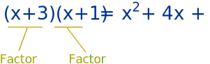
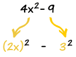

Factoring in Algebra
Factors
Numbers have factors:

And expressions (like x2+4x+3) also have factors:

Factoring
Factoring (called "Factorising" in the UK) is the process of finding the factors:
Factoring: Finding what to multiply together to get an expression.
It is like "splitting" an expression into a multiplication of simpler expressions.
Example: factor 2y+6
Both 2y and 6 have a common factor of 2:
- 2y is 2 × y
- 6 is 2 × 3
So we can factor the whole expression into:
2y+6 = 2(y+3)
So 2y+6 has been "factored into" 2 and y+3
Factoring is also the opposite of Expanding:

Common Factor
In the previous example we saw that 2y and 6 had a common factor of 2
But to do the job properly we need the highest common factor, including any variables
Example: factor 3y2+12y
Firstly, 3 and 12 have a common factor of 3.
So we could have:
3y2+12y = 3(y2+4y)
But we can do better!
3y2 and 12y also share the variable y.
Together that makes 3y:
- 3y2 is 3y × y
- 12y is 3y × 4
So we can factor the whole expression into:
3y2+12y = 3y(y+4)
Check: 3y(y+4) = 3y × y + 3y × 4 = 3y2+12y
More Complicated Factoring
Factoring Can Be Hard !
The examples have been simple so far, but factoring can be very tricky.
Because we have to figure what got multiplied to produce the expression we are given!

It is like trying to find which ingredients
went into a cake to make it so delicious.
It can be hard to figure out!
Experience Helps
With more experience factoring becomes easier.
Example: Factor 4x2 − 9
Hmmm... there don't seem to be any common factors.
But knowing the Special Binomial Products gives us a clue called the "difference of squares":

Because 4x2 is (2x)2, and 9 is (3)2,
So we have:
4x2 − 9 = (2x)2 − (3)2
And that can be produced by the difference of squares formula:
(a+b)(a−b) = a2 − b2
Where a is 2x, and b is 3.
So let us try doing that:
(2x+3)(2x−3) = (2x)2 − (3)2 = 4x2 − 9
Yes!
So the factors of 4x2 − 9 are (2x+3) and (2x−3):
Answer: 4x2 − 9 = (2x+3)(2x−3)
How can you learn to do that? By getting lots of practice, and knowing "Identities"!
Remember these Identities
Here is a list of common "Identities" (including the "difference of squares" used above).
It is worth remembering these, as they can make factoring easier.
| a2 − b2 | = | (a+b)(a−b) |
| a2 + 2ab + b2 | = | (a+b)(a+b) |
| a2 − 2ab + b2 | = | (a−b)(a−b) |
| a3 + b3 | = | (a+b)(a2−ab+b2) |
| a3 − b3 | = | (a−b)(a2+ab+b2) |
| a3+3a2b+3ab2+b3 | = | (a+b)3 |
| a3−3a2b+3ab2−b3 | = | (a−b)3 |
There are many more like those, but those are the most useful ones.
Advice
The factored form is usually best.
When trying to factor, follow these steps:
- "Factor out" any common terms
- See if it fits any of the identities, plus any more you may know
- Keep going till you can't factor any more
There are also Computer Algebra Systems (called "CAS") such as Axiom, Derive, Macsyma, Maple, Mathematica, MuPAD, Reduce and many more that are good at factoring.
More Examples
Experience does help, so here are more examples to help you on the way:
Example: w4 − 16
An exponent of 4? Maybe we could try an exponent of 2:
w4 − 16 = (w2)2 − 42
Yes, it is the difference of squares
w4 − 16 = (w2 + 4)(w2 − 4)
And "(w2 − 4)" is another difference of squares
w4 − 16 = (w2 + 4)(w + 2)(w − 2)
That is as far as I can go (unless I use imaginary numbers)
Example: 3u4 − 24uv3
Remove common factor "3u":
3u4 − 24uv3 = 3u(u3 − 8v3)
Then a difference of cubes:
3u4 − 24uv3 = 3u(u3 − (2v)3)
= 3u(u−2v)(u2+2uv+4v2)
That is as far as I can go.
Example: z3 − z2 − 9z + 9
Try factoring the first two and second two separately:
z2(z−1) − 9(z−1)
Wow, (z-1) is on both, so let us use that:
(z2−9)(z−1)
And z2−9 is a difference of squares
(z−3)(z+3)(z−1)
That is as far as I can go.
Now get some more experience: